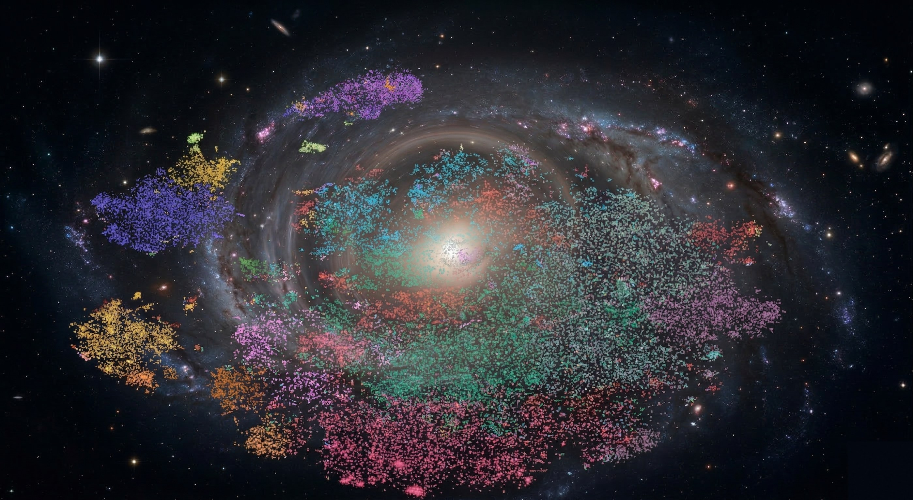

Codex Aeterna
Memory becomes immortal
Codex Galaxy
56,000 minds · 4,000 years · Find your place among them

Cognitive Archetypes
0 interactive stars · 50,387 total
56,000 minds · 4,000 years · Find your place among them
